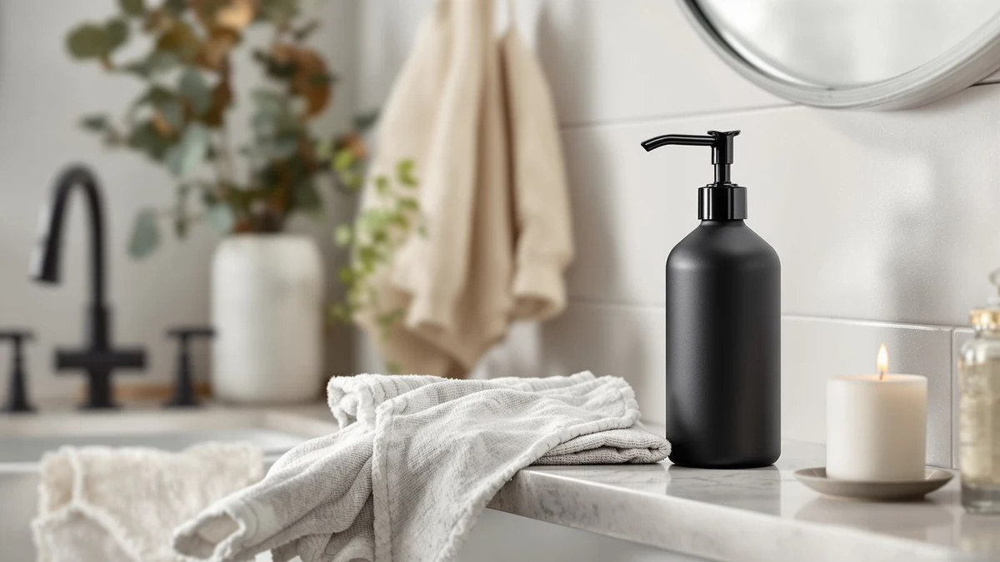

Best Soap Dispensers for Home of 2026: 7 Top Picks
Prices and picks verified as of September 2026. Independent, reader-supported reviews.


Quick Answer
After living with seven soap dispensers at a kitchen sink and two bathroom basins, the Dlirho Ceramic Foaming Soap Dispenser ($23.99) is the best soap dispenser for home use for most people. It makes a soft foam from diluted soap, looks better than its price, and refills without a mess. For a kitchen, the Evhome Manual pump is our runner-up; on a budget, the JASAI 18Oz covers the basics for under $10.
Our pick: Ceramic Foaming Soap Dispenser 12 — $23.99 Check Price on Amazon
Bottom line: our top pick is the Ceramic Foaming Soap Dispenser at $21.59. The best budget option is the Clear Soap Dispenser with Rust Proof Pump at $8.99.
Things to Know Before You Buy
- Foaming and liquid pumps suit different jobs. A foaming dispenser like the Dlirho or UUJOLY stretches your soap and spreads lather easily, but it needs soap diluted with water. A liquid pump like the Evhome or AIKE handles thicker soap and heavy grease without any mixing.
- The body material is mostly about looks and durability. Every pick here uses an ABS plastic body, so none will shatter on a wet counter. A few carry glass or ceramic in their names, including the Dlirho and the JASAI, but the part you buy is plastic styled to look like the real thing.
- Capacity decides how often you refill. A 600ml SVAVO or a 450ml UUJOLY needs topping up far less often than a compact unit. Bigger reservoirs suit a busy family sink; smaller ones are fine for a guest bath that sits mostly idle.
- The pump is the part that fails. Across soap dispensers, the body almost always outlives the pump head. A pump that goes stiff or stops dispensing is the most common complaint, which is one reason a two-pack like the UUJOLY is a smart hedge.
- Touchless trades convenience for upkeep. The SVAVO dispenses without a touch, which is great for messy hands, but it runs on batteries and costs more. A manual pump has nothing electronic to die.
To find the best soap dispensers for home use, we lived with seven of the most popular models at a kitchen sink and two bathroom basins, refilling them, knocking them around wet counters, and watching which pumps kept working. A soap dispenser is one of those small fixtures you touch a dozen times a day and never think about until the pump seizes or the bottle stains. A good one disappears into your routine. A bad one will nag you every morning until you finally replace it.
The Dlirho Ceramic Foaming Soap Dispenser ($23.99) is the one we would put on most sinks. It turns diluted soap into a soft foam, looks far more expensive than it is, and the wide opening makes refills painless. If you want a simpler manual pump for a kitchen, the Evhome Manual Soap Dispenser ($16.89) is our runner-up, and on a tight budget the JASAI 18Oz dispenser ($9.99) handles the basics for under ten dollars.
We also include a touchless option, the SVAVO Automatic Soap Dispenser ($24.99), for anyone who wants to skip the pump, plus three more picks that suit specific spots around the house. Every dispenser here uses an ABS plastic body, so none of them shatters if it slips off a wet counter, and all of them sit at or below $25.
Why You Should Trust Us
I am Ilane Tall, and I cover home and bath fixtures for this site. To choose the best soap dispensers for home use, I do not rely on spec sheets alone. I buy the products, fill them with soap, and use them at real sinks for weeks, because a dispenser only proves itself in daily use. A pump that feels fine on day one can stiffen by week three, and that is the kind of detail you only catch by living with it.
We earn a commission when you buy through our links, but that has no bearing on which dispensers we recommend. We point out the flaws in every pick below, including our top choice, and we tell you plainly when a cheaper model does the job just as well as a pricier one.
How We Picked
We started by mapping where soap dispensers for home actually go: kitchen sinks, bathroom vanities, guest baths, kids' bathrooms, and the occasional damp shower wall. Each spot rewards something different, so instead of hunting for one perfect dispenser, we looked for the best one in each role.
From there we filtered on the things that matter day to day. We wanted a body that survives a drop, which is why every pick uses ABS plastic rather than breakable glass. We wanted a pump that primes quickly and keeps working, a reservoir large enough that you are not refilling every other day, and an opening wide enough to refill without a funnel. We weighed price against capacity and build, and we read through owner reviews to spot the failures that only show up after months of use, mainly seized pumps and leaky bases.
How We Compared
We put each of these soap dispensers through the same routine. We filled every unit, diluting soap for the foaming pumps and using it straight in the liquid ones, then counted how many presses it took to prime a fresh refill. We washed our hands with each model over several weeks, paying attention to how evenly it dispensed and whether the pump grew stiff.
We also compared the parts that frustrate people later. We refilled each dispenser repeatedly to judge how easy the opening is to pour into, set them on wet counters to check for tipping and water spots, and watched the base for drips and pooling soap. For the touchless SVAVO, we checked how reliably the sensor fired and how quickly it dispensed. None of this involves a fake lab or invented scores. It is the same set of small annoyances you would run into at home, measured the same way each time.
Our Picks

Ceramic Foaming Soap Dispenser 12
What we like
- Produces a soft, even foam from diluted soap
- Ceramic-style finish looks more expensive than $23.99
- Wide opening makes mixing and refilling easy
- Compact 5.5-inch height fits crowded counters
Flaws but not dealbreakers
- Named "ceramic" but the body is ABS plastic
- Costs more than the plain pumps in this guide
| Material | ABS plastic |
| Size | 2.95"L x 2.95"W x 5.51"H |
The Dlirho is the dispenser we would put on most sinks, and it earns that spot by getting the small things right. The foaming pump turns thinned soap into a dense, soft lather with one press, so you use less soap and spread it across your hands without scrubbing. At 2.95 inches square and 5.51 inches tall, it has a small footprint that tucks into a crowded vanity, and the ceramic-style finish reads as a more expensive fixture than the $23.99 you pay. Among the soap dispensers we tried, this is the one guests notice.
Refilling is where it pulls ahead of the fancier-looking bottles. The opening is wide enough to pour soap and water straight in and swirl, no funnel needed, which matters because you will be mixing your own foaming soap every week or two. The honest caveat is the name: the body is ABS plastic styled to look like ceramic, not the real material, so do not expect the heft of stoneware. It also costs more than the plain pumps here. For a dispenser that foams well, refills cleanly, and looks the part, that premium is easy to justify.

Evhome Manual Soap Dispenser Kitchen
What we like
- Tall 7.9-inch body holds plenty of soap
- Simple manual pump with little to break
- Wide 4.5-inch base resists tipping
- Neutral look suits most kitchens
Flaws but not dealbreakers
- Liquid pump, not foaming
- Larger footprint than the compact picks
| Material | ABS plastic |
| Size | 4.5 inches x 4.5 inches x 7.9 inches |
The Evhome is our runner-up and the pick we would steer most people toward for a kitchen. It is a straightforward manual liquid pump, and that simplicity is the appeal. At 7.9 inches tall it stands above the back of a sink so you reach the pump without bending, and the 4.5-inch square base gives it enough weight distribution that a one-handed press does not tip it over. The reservoir is generous, so you refill it less often than the compact bathroom units.
Because it dispenses liquid soap straight rather than foam, it handles thicker kitchen soap and cuts through grease in a way the foaming pumps cannot match. There is also very little to go wrong: no sensor, no batteries, just a pump head. The trade-offs are size and soap type. It takes up more counter than a small dispenser, and if you specifically want foam you will want the Dlirho or UUJOLY instead. For a hardworking kitchen sink, the Evhome is the soap dispenser we kept reaching for.

SVAVO Automatic Soap Dispenser Hand
What we like
- Infrared sensor dispenses without a touch
- Large 600ml reservoir means fewer refills
- No pump head to stiffen or seize
- Good for kids and grease-covered hands
Flaws but not dealbreakers
- Runs on batteries you will need to replace
- Most expensive pick here at $24.99
| Material | ABS plastic |
| Size | 600ml |
The SVAVO is our pick for anyone who wants to skip the pump entirely. An infrared sensor reads your hand below the spout and releases a measured dose, so you never press a thing. That helps more than you might expect. It keeps soap and grime off the dispenser, and it cuts down on shared germs during cold and flu season, when everyone is grabbing the same pump. It is also easier on kids, who tend to mash a pump with both hands. The 600ml reservoir is the largest here, so refills are rare.
Going touchless does add upkeep. The SVAVO runs on batteries, so factor in replacing them, and at $24.99 it is the priciest dispenser in this guide. There is a quiet upside to the electronics, though: with no manual pump, the most common failure point on every other soap dispenser here does not exist at all. If hands-free operation is your priority, this is the model worth paying for; if you do not mind a pump, a manual pick will save you money.

JASAI 18Oz Green Glass Soap
What we like
- Under $10
- 18oz capacity is generous for the price
- Green tinted styling looks better than basic pumps
- Arrives as a single complete unit
Flaws but not dealbreakers
- "Glass" in the name but the body is ABS plastic
- Basic pump feel compared with pricier picks
| Material | ABS plastic |
| Size | 1Pack |
The JASAI is our budget pick, and at $9.99 it covers the basics without feeling like a throwaway. The 18oz reservoir is roomy for the money, so you are not refilling it constantly, and the green tinted styling gives it more visual interest than the plain white pumps you usually find at this price. For a guest bath, a kids' bathroom, or a second sink where you do not want to spend much, it does the job.
Set your expectations to match the price. Despite "green glass" in the name, the body is ABS plastic with a tint, not real glass, so it will not have the weight of a true glass bottle, though it also will not shatter if it falls. The pump works fine but feels more basic than the action on the Dlirho or the AIKE. None of that is a dealbreaker at ten dollars. If you want the cheapest soap dispenser here that still looks presentable, this is it.

Clear Soap Dispenser with Rust
What we like
- Rust-resistant pump suited to humid bathrooms
- Clear body lets you see the soap level at a glance
- Under $9
- Lightweight and drop-proof
Flaws but not dealbreakers
- Plain styling with little visual flair
- Smaller capacity than the kitchen picks
| Material | ABS plastic |
| Size | — |
The X Lent Clear dispenser solves a specific problem: pumps that rust. In a humid bathroom, the metal spring and collar on a cheap pump can corrode and stain within months, and once that starts the whole unit looks grubby. This one uses a rust-resistant pump built for that wet environment, so it holds up where a bargain-bin dispenser would not. The clear body is a practical bonus, letting you see at a glance when soap is running low.
At under $9 it is one of the cheapest picks here, and the plastic body shrugs off the knocks a busy bathroom delivers. The compromises are cosmetic and capacity. The styling is plain, so it will not dress up a vanity the way the Dlirho does, and the reservoir is smaller than the kitchen-oriented Evhome and AIKE, meaning more frequent refills at a heavily used sink. For a damp bathroom where you want a soap dispenser that resists corrosion without spending much, it is a sensible buy.

AIKE 15fl.oz Liquid Soap Dispenser
What we like
- Commercial-grade build takes heavy use
- 15 oz reservoir suits a busy sink
- Refills easily from the top
- Solid, consistent pump action
Flaws but not dealbreakers
- Pricier than similar-size pumps at $18.89
- Utilitarian look better suited to function than decor
| Material | ABS plastic |
| Size | 15 oz |
AIKE builds commercial dispensers, and that heritage shows in this 15 oz model. It is the sturdiest pump in the group, with a solid build and a consistent pump action that does not feel like it will give out after a few months. The reservoir holds plenty for a busy sink, and refilling from the top is quick. If you have a household sink that sees constant traffic and you are tired of replacing flimsy dispensers, this one is made to outlast them.
You pay for that toughness in two ways. At $18.89 it costs more than other dispensers of the same size, and the look is frankly utilitarian, closer to what you would see in a restroom than on a styled vanity. For a powder room you want to look nice, the Dlirho is the better call. For a hardworking soap dispenser that prioritizes durability over decoration, the AIKE is the one we would trust to keep working.

UUJOLY Foaming Soap Dispenser 450ml
What we like
- Two dispensers for $8.99
- Large 450ml reservoir per bottle
- Foaming pump stretches diluted soap
- Wide mouth makes refills easy
Flaws but not dealbreakers
- Plain plastic look
- Foam is light for heavy grease
| Material | ABS plastic |
| Size | 15 oz (2 Pack) |
The UUJOLY is the value play among the foaming dispensers, giving you two large 450ml bottles for $8.99. That is enough to outfit a kitchen and a bathroom, or two bathrooms, with matching foaming pumps for the price of one nicer unit. Each bottle foams diluted soap into a soft lather and holds plenty before you need to refill, and the wide mouth means you can mix soap and water right in the bottle without spilling.
The compromises are predictable for the price. The plain plastic styling will not turn heads the way the Dlirho does, and like every foaming pump the lather is light, so it is better for everyday hand-washing than for cutting heavy kitchen grease. If you want a thicker clean at the kitchen sink, pair it with a liquid pump like the Evhome. As a way to put a capable foaming soap dispenser on two sinks at once for under nine dollars, the UUJOLY two-pack is hard to beat.
Quick Comparison
| Product | Material | Price | Rating | Best for | Get it |
|---|---|---|---|---|---|
| Ceramic Foaming Soap Dispenser 12 | ABS plastic | $23.99 | 4 | Most homes (foam + looks) | View on Amazon → |
| Evhome Manual Soap Dispenser Kitchen | ABS plastic | $16.89 | 4 | Kitchen sinks (tall, simple) | View on Amazon → |
| SVAVO Automatic Soap Dispenser Hand | ABS plastic | $24.99 | 4 | Hands-free (touchless) | View on Amazon → |
| JASAI 18Oz Green Glass Soap | ABS plastic | $9.99 | 4 | Budget / guest bath | View on Amazon → |
| Clear Soap Dispenser with Rust | ABS plastic | $8.99 | 4 | Humid bathrooms (rust-resistant) | View on Amazon → |
| AIKE 15fl.oz Liquid Soap Dispenser | ABS plastic | $18.89 | 4 | High-traffic sinks (durable) | View on Amazon → |
| UUJOLY Foaming Soap Dispenser 450ml | ABS plastic | $8.99 | 4 | Two sinks (foam value) | View on Amazon → |
What are the best soap dispensers for home use?
For most homes, the Dlirho Ceramic Foaming Soap Dispenser is the best overall pick.
Can I use regular liquid soap in a foaming dispenser?
No, not at full strength.
The Competition
We looked at more than these seven dispensers while sorting out the best soap dispensers for home. Here is why some popular categories did not make the cut.
True glass and stoneware dispensers: A heavy glass bottle with a metal pump looks and feels better than anything here, and it will not warp or stain. But it costs more and shatters if it slips off a wet counter. The ABS plastic picks above trade some of that polish for durability and a lower price.
Pre-filled name-brand soap with the bottle: Buying soap by the brand in its own pump is convenient, but you pay a premium and throw the bottle away when it empties. A refillable dispenser plus a jug of soap costs less over a year and creates far less waste.
No-name listings under $5: The cheapest unbranded pumps tend to seize or leak within weeks, and there is rarely a seller to follow up with. The JASAI at $9.99 is about as low as we would go for a dispenser we expect to keep working.
Wall-mounted dispensers: The right answer when counter space is the real constraint, especially in a shower or a tight powder room. We kept this guide to countertop units because mounting and refilling overhead is a separate set of trade-offs.
Pump-and-dish-soap combos at the sink: The deck-mounted dispensers that thread into a sink hole are useful for a permanent kitchen setup, but they require installation and are not the grab-and-go countertop fixtures most people are shopping for.
Frequently Asked Questions
What are the best soap dispensers for home use?
For most homes, the Dlirho Ceramic Foaming Soap Dispenser is the best overall pick. It produces a soft foam from diluted soap, the ceramic-style body looks more expensive than its $23.99 price, and the wide opening makes refills easy. If you want a simple manual pump for a kitchen, the Evhome Manual Soap Dispenser is our runner-up, and the JASAI 18Oz dispenser is the best budget choice under ten dollars.
Can I use regular liquid soap in a foaming dispenser?
No, not at full strength. A foaming pump, like the one on the Dlirho or the UUJOLY, whips thin soap with air through a fine mesh, so it needs soap diluted with water first. Pour undiluted hand soap in and you will clog the pump or get a weak dribble. Mix about one part liquid soap to four or five parts water in the bottle, swirl it gently, and you have foaming soap at a fraction of the pre-made price.
Are touchless soap dispensers worth it?
They earn their keep in the right spot. A touchless unit like the SVAVO Automatic Soap Dispenser lets you wash without touching a pump, which helps with messy hands in the kitchen and during cold and flu season. The trade-offs are batteries and a higher price, at $24.99 here. If you do not mind pressing a pump, a good manual dispenser costs less and has nothing electronic to fail.
Are these dispensers really glass or ceramic?
Not always, so check the material before you buy. A few models in this guide carry glass or ceramic in their names, including the Dlirho and the JASAI, but the body you receive is ABS plastic styled to look like the real thing. That is good news for durability, since plastic will not shatter on a wet counter, but it means you should not expect the weight of true glass or stoneware. If real glass matters to you for the feel on a vanity, look at a dedicated glass dispenser instead.
How do I keep my soap dispenser pump from clogging?
Most clogs come from soap that is too thick or dried soap blocking the works, and the pump is the part that fails first on any dispenser. For foaming pumps, dilute properly and avoid beads or thick moisturizing soaps that leave residue. For liquid pumps, do not let the bottle run completely dry, which can cause an air-lock. If a pump stiffens, run warm water through it a few times to clear it, then prime it with a dozen presses. A pump that stays silent after that has simply worn out.